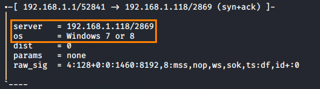

p0f
p0f
This is a passive TCP/IP stack fingerprinting tool.
p0f can attempt to identify the system
running on machines that send traffic on the network, capturing this traffic and analyze it
SITE:
https://lcamtuf.coredump.cx/p0f3/install:
execute:
-i <inteface> → listen on this interface
-p → promiscuos
mode
bibliography:
https://tools.kali.org/information-gathering/p0f